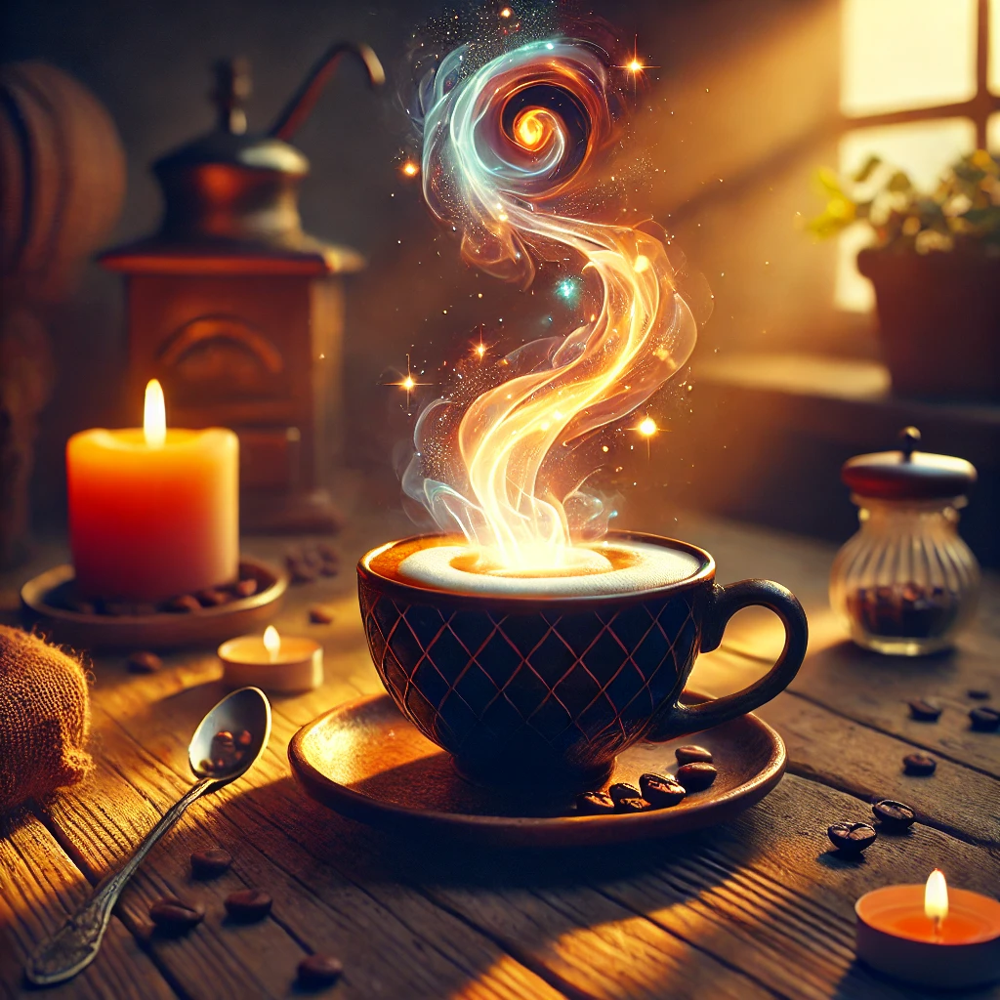
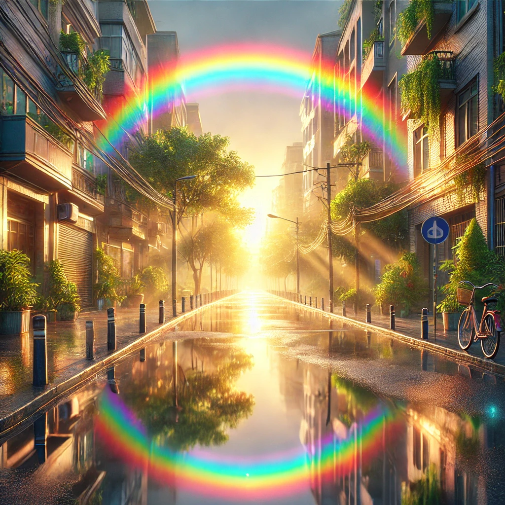

Magie kann in den Momenten gefunden werden, in denen wir innehalten und die Schönheit der Natur betrachten. Ein Vogel, der am Himmel gleitet, oder der Klang von Blättern im Wind – all das birgt Zauber. Es ist die Kunst, das Besondere im Alltäglichen zu sehen.
Wenn wir einem Menschen zuhören, geben wir ihm ein Stück unserer Aufmerksamkeit, und darin liegt Magie. Ein freundliches Wort zur rechten Zeit kann eine Welt verändern. Diese kleinen Gesten sind oft stärker als große Taten.
Magie beginnt oft im Herzen. Es sind die kleinen Freuden, wie ein unerwartetes Lächeln oder ein spontaner Tanz im Regen, die unser Leben erhellen. Im Alltag verborgen liegen unzählige Momente voller Zauber, die nur darauf warten, entdeckt zu werden.
Manchmal ist es ein einfacher Duft, der magisch wirkt – frischer Kaffee am Morgen oder das Salz in der Meeresluft. Solche Sinneseindrücke verbinden uns mit der Welt und schaffen magische Augenblicke. Es sind diese kleinen Details, die uns zeigen, wie lebendig wir sind.

Die Magie der Musik liegt in ihrer Fähigkeit, uns an ferne Orte zu tragen. Ein Lied kann Erinnerungen wecken, die wir längst vergessen glaubten. Es verbindet uns mit anderen und mit uns selbst.
Jeder Sonnenaufgang trägt eine leise Magie in sich. Die Farben des Himmels und das Erwachen der Welt erinnern uns daran, dass jeder Tag ein neues Wunder ist. In diesen Momenten liegt Kraft und Hoffnung.
Die Stille hat eine eigene magische Qualität. Sie schenkt uns Raum zum Nachdenken und zum Fühlen. In ihr können wir Antworten finden, die im Lärm des Alltags verborgen bleiben.
Manchmal liegt die Magie in der Verbindung zwischen zwei Menschen. Ein Blick, ein Lachen oder ein einfaches "Ich verstehe dich" können eine Brücke zwischen Herzen bauen. Solche Momente bleiben unvergesslich.

Magie kann entstehen, wenn wir etwas Neues ausprobieren. Ob ein fremdes Gericht, eine neue Sprache oder ein unbekannter Ort – solche Erfahrungen erweitern unseren Horizont und bringen Zauber in unser Leben. Sie schenken uns Geschichten, die wir niemals vergessen.
Die Magie des Lesens liegt darin, dass wir in fremde Welten eintauchen können. Ein Buch öffnet Türen zu Abenteuern, von denen wir nur träumen können. Worte haben die Macht, uns zu verändern und zu inspirieren.
Die Natur lehrt uns, dass Magie überall ist. Ein Regenbogen nach einem Sturm oder der erste Schnee des Winters – solche Augenblicke sind magische Geschenke. Sie zeigen uns, dass Schönheit oft unerwartet kommt.
Die Magie des Lachens ist ansteckend. Ein ehrliches Lachen kann jeden Raum erhellen und Herzen berühren. Es zeigt uns, wie mächtig Freude ist und wie sie Menschen verbindet.
Der Zauber eines klaren Nachthimmels erinnert uns daran, wie klein wir sind. Sterne, die in unendlicher Ferne leuchten, erzählen Geschichten von Zeit und Raum. Sie laden uns ein, über das Wunder des Universums nachzudenken.
Magie kann auch in Erinnerungen liegen. Ein altes Foto oder ein Lied aus unserer Jugend kann uns zurück in die Zeit versetzen. Diese Momente tragen die Kraft, uns wieder mit unserer Vergangenheit zu verbinden.